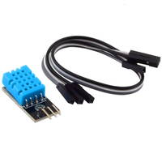

2015-11-24 - Nº 30

Editorial
Aqui está a Newsletter Nº 30 no seu formato habitual. Foram adicionados botões de partilha nas várias redes sociais, se gostar da Newsletter partilhe-a!
Todas as Newsletters encontram-se indexadas no link.
Esta Newsletter tem os seguintes tópicos:
Esta semana foi anunciada mais uma compra no mundo dos semicondutores - a On Semi vai adquirir a Fairchild Semiconductor. A STM anuncia a nova geração ST33, designando-a como a mais segura e avançada plataforma de 32bits. Cientistas da Universidade de Linköping criaram circuitos analógicos e digitais dentro de plantas vivas. Na Newsletter desta semana iremos apresentar um projeto de maker que é um detector de poluição atmosférica. Iremos construir um circuito que é um Controlador de Motor DC.
 João Alves ([email protected])
João Alves ([email protected])
O conteúdo da Newsletter encontra-se sob a licença  Creative Commons Attribution-NonCommercial-ShareAlike 4.0 International License.
Creative Commons Attribution-NonCommercial-ShareAlike 4.0 International License.
Novidades da Semana ^
ON Semiconductor to Acquire Fairchild Semiconductor for $2.4 Billion in Cash
"ON Semiconductor and Fairchild Semiconductor International Inc. today announced that they have entered into a definitive agreement for ON Semiconductor to acquire Fairchild for $20.00 per share in an all cash transaction valued at approximately $2.4 billion. The acquisition creates a leader in the power semiconductor market with combined revenue of approximately $5 billion, diversified across multiple markets with a strategic focus on automotive, industrial and smartphone end markets. “The combination of ON Semiconductor and Fairchild creates a power semiconductor leader with strong capabilities in a rapidly consolidating semiconductor industry. Our plan is to bring together two companies with complementary product lines to offer customers the full spectrum of high, medium and low voltage products,” said Keith Jackson, president and chief executive officer of ON Semiconductor. “The immediate EPS accretion and potential to significantly augment ON Semiconductor’s free cash flow, make the Fairchild acquisition an excellent opportunity for ON Semiconductor stockholders.” “As part of ON Semiconductor, Fairchild will continue to pioneer technology and design innovation in efficient energy consumption to help our customers achieve success and drive value for our partners and employees around the world,” stated Mark Thompson, chairman and chief executive officer of Fairchild. “We look forward to working closely with the ON Semiconductor team to ensure a smooth transition.”"
STMicroelectronics Announces Most Advanced 32bit Secure Microcontroller

"STMicroelectronics (NYSE: STM), a global semiconductor leader serving customers across the spectrum of electronics applications, has introduced the first member of the third generation of its industry-leading ST33 series of secure microcontrollers based on the 32-bit ARM® SecurCore® SC300™ processor. The ST33J2M0 raises the bar in secure microcontrollers by providing the industry's largest (2MByte) Flash program memory, nearly doubling the memory available in a secure microcontroller. Fully manufactured in ST’s advanced 40nm process technology for cost efficiency, the secure microcontroller includes the highest performance and integrated crypto-accelerators that together with the industry’s fastest clock speed in a secure micro, enable the highest performance for fast application execution. It also features a new hardware architecture with strong and multiple fault-protection mechanisms covering the CPU, memories, and buses to facilitate the development of highly secure software."
Team develops 'electronic plants'
"Researchers at Linköping University in Sweden have created analog and digital electronics circuits inside living plants. The group at the Laboratory of Organic Electronics (LOE), under the leadership of Professor Magnus Berggren, have used the vascular system of living roses to build key components of electronic circuits. The article featured in the journal Science Advances demonstrates wires, digital logic, and even displays elements - fabricated inside the plants - that could develop new applications for organic electronics and new tools in plant science. Plants are complex organisms that rely on the transport of ionic signals and hormones to perform necessary functions. However, plants operate on a much slower time scale making interacting with and studying plants difficult. Augmenting plants with electronic functionality would make it possible to combine electric signals with the plant's own chemical processes. Controlling and interfacing with chemical pathways in plants could pave the way to photosynthesis-based fuel cells, sensors and growth regulators, and devices that modulate the internal functions of plants. "Previously, we had no good tools for measuring the concentration of various molecules in living plants. Now we'll be able to influence the concentration of the various substances in the plant that regulate growth and development. Here, I see great possibilities for learning more," says Ove Nilsson, professor of plant reproduction biology and director of the Umeå Plant Science Center, as well as a co-author of the article."
Ciência e Tecnologia ^
Researchers from Kiel and Bochum develop new information storage device

"Scientists from Kiel University and the Ruhr Universität Bochum (RUB) have developed a new way to store information that uses ions to save data and electrons to read data. This could enable the size of storage cells to be reduced to atomic dimensions. But that is not the only advantage of the new technology, as the researchers reported in the journal Scientific Reports. "Six plus seven makes three - plus one carried over", calculated Professor Hermann Kohlstedt, Head of the Nanoelectronic group at Kiel University. This describes that storing information in the short or long term is important - even for the simplest calculations. Modern computers use this principle in practically every Bit (unit of measurement for the digital information content) and the almost unbelievable increase in performance over the last decade was based on a very simple rule: faster processors and more storage space."
Quantum physics meets genetic engineering

"Researchers use engineered viruses to provide quantum-based enhancement of energy transport. Nature has had billions of years to perfect photosynthesis, which directly or indirectly supports virtually all life on Earth. In that time, the process has achieved almost 100 percent efficiency in transporting the energy of sunlight from receptors to reaction centers where it can be harnessed — a performance vastly better than even the best solar cells. One way plants achieve this efficiency is by making use of the exotic effects of quantum mechanics — effects sometimes known as “quantum weirdness.” These effects, which include the ability of a particle to exist in more than one place at a time, have now been used by engineers at MIT to achieve a significant efficiency boost in a light-harvesting system."
New flat transistor defies theoretical limit
"A team of researchers with members from the University of California and Rice University has found a way to get a flat transistor to defy theoretical limitations on Field Effect Transistors (FETs). In their paper published in the journal Nature, the team describes their work and why they believe it could lead to consumer devices that have both smaller electronics and longer battery life. Katsuhiro Tomioka with Erasmus MC University Medical Center in the Netherlands offers a News & Views article discussing the work done by the team in the same journal edition. As Tomioka notes, the materials and type of architecture currently used in creating small consumer electronic devices is rapidly reaching a threshold upon which a tradeoff will have to be made—smaller transistors or more power requirements—this is because of the unique nature of FETs, shortening the channel they use requires more power, on a logarithmic scale. Thus, to continue making FETs ever smaller and to get them to use less power means two things, the first is that a different channel material must be found, one that allow high switch-on currents at low voltages. The second is a way must be found to lower the voltage required for the FETs."
Modelos 3D ^
Com a disponibilidade de ferramentas que permitem dar azo a nossa imaginação na criação de peças 3D e espaços como o thingiverse para as publicar, esta rubrica apresenta alguns modelos selecionados que poderão ser úteis.
Customizable Jigsaw cutter (http://www.thingiverse.com/thing:986432)
Now with customizer for easier scaling and printing. Set the width and size to suit your printbed.
This jigsaw made in Inkscape using my extension here:
https://github.com/Neon22/inkscape-jigsaw Requires Inkscape 0.91 Then exported in V7 of DanNewman's Inkscape to OpenSCAD converter here:
http://www.thingiverse.com/thing:25036 And then edited to make one side of the jigsaw cutter sharp.
You can make Jigsaw's of arbitrary size and shape by using the inkscape extension and a bit of manual editing. (Use the example scad as a guide) :)
Takes a while to F6...
Saw Spina's jigsaw and made one in OpenSCAD with my Inkscape extension - originally designed for laser cutters.
Fidget Star (http://www.thingiverse.com/thing:929504)
Open, close, repeat. One way it's a box and the other way it's a star. Then a box. Then a star. Repeat the repeat.
This hinged print-in-place model is a remix of the Fidget Cube. It 3D prints fully assembled, in one piece, folded up! A snub version is also included for those who like the old school fidget.
For the design geeks: Thanks to Greg Knapp, who used Blender to fold up the original Fidget Cube model and print it as a closed cube. His YouTube video inspired me to do the same thing in OpenSCAD code so that the Fidget Cube could be printed as a closed cube. The remix gave me the opportunity to make the snub side of the fidget a more interesting star shape.
For the math geeks: The "star" is a stellated rhombic dodecahedron, and this model makes up half of a Yoshimoto cube.
Stackable Battery Holders (http://www.thingiverse.com/thing:1004996)
These stackable battery holders are a design I did for Checkerboard, Ltd. and were a Quirky.com community selected design. Checkerboard gratiously allowed me to post them here on Thingiverse - if you're interested in getting them printed on a high res printer, please support their hub on 3Dhubs!
Easily wall-mounted on two screws. Stackable and will sit on a table. Three simple parts
There are three sizes available. Each size has three files. Download the files for your size. I recommend printing and then hot-gluing the parts together. They are friction fit and include tabs to ensure a tight, permanent lock.
Circuitos ^
Aqui é apresentado um circuito simples que poderá ser construído com componentes.
Controlador de Motor DC
Hoje irá ser construído um circuito para controlar motores DC.
Os motores eléctricos de qualquer tipo funcionam graças ao electromagnetismo. Permitem converter a energia eléctrica em energia mecânica. Os motores DC são motores de controlo relativamente simples.
São motores que têm dois modos de funcionamento e que os permite girar em ambos os sentidos em função da forma como lhes é aplicada a polaridade do circuito DC.
Habitualmente quando que pretende controlar este tipo de motores, são usadas as chamadas pontes H (H bridges) que podem ser construídas com 4 transístores bipolares (dois NPN e dois PNP) emparelhados de forma a que em função das tensões aplicadas em dois pontos conseguimos controlar o sentido do movimento do motor. Têm a designação de ponte H porque o desenho do circuito assume a forma da letra H.
Atendendo a que qualquer motor também é um gerador têm que se prevenir as chamadas correntes indutivas que são geradas quando o motor se transforma num gerador. Este passo é resolúvel através da colocação de diodos que irão proteger o circuito destas correntes.
É preciso ter em atenção que embora existam dois circuitos de alimentação (um para o controlo e outro para a alimentação dos motores), ambos devem partilhar o GND.
A utilização de uma ponte H para controlo do motor permite separar o circuito de alimentação do motor, que tipicamente precisa de uma tensão e mais corrente, do circuito de controlo.
No circuito que iremos construir iremos usar um IC designado por L293D. Este já incorpora praticamente tudo que precisamos e simplifica grandemente o circuito. A velocidade do motor é controlada por PWM aplicada ao pino de ENABLE do IC. Este IC é muito interessante porque tem quatro meias pontes H e permite controlar motores até 600mA.
Quando usamos motores diferentes deverá ter-se em atenção das características do mesmo e as limitações do IC em termos de máximo de corrente que pode disponibilizar.
Para suavizar a carga de energia nos motores convém colocar alguns condensadores, isto ajuda a evitar picos e estabiliza a corrente. Na alimentação deverá usar-se um condensador electrolítico de 10 uF com uma tensão miníma superior à usada no circuito de alimentação e também pode ser usado um condensador cerâmico de 220nF mesmo junto a cada motor.
Dica:
- Existe uma forma simples de duplicar a corrente que o L293D pode aguentar. Basta colocar outro em cima do primeiro.
- Pode igualmente usar-se um IC alternativo que é o SN754410NE que suporta até 1A. Sendo necessário neste ultimo acrescentar os diodos de proteção.
Relativamente ao L293D, em função dos valores nos pinos 1,2 e 7 temos os seguintes resultados:
| Pino 1 | Pino 2 | Pino 7 | Resultado |
|---|---|---|---|
| Alto | Baixo | Alto | Girar no sentido dos ponteiros do relógio |
| Alto | Alto | Baixo | Girar contra o sentido dos ponteiros do relógio |
| Alto | Baixo | Baixo | Parar |
| Alto | Alto | Alto | Parar |
| Baixo | N/A | N/A | Parar |
Esquemático
Este é um circuito base de uma ponte H construída com transístores:
O circuito usado foi o seguinte:
Componentes (BOM):
Circuito:
- 1x IC L293D
- 1x Botão de pressão (SW1)
- 1x Resistência de 10K Ohms (R2)
- 1x Resistência de 470 Ohms (R1,R3)
- 1x LED de 5mm Verde (D1)
- 1x LED de 5mm Vermelho (D2)
- 1x Resistência Variável de 10K Ohms (RV1)
- 1x Condensador Cerâmico de 220nF (C1)
- 1x Condensador Electrolítico de 10uF 25V (C2)
- 1x Motor DC (M1)
Pin-out dos IC/Componentes
Código
Este sketch deve ser carregado num Arduino através do seu IDE. Quando o botão for premido o motor mudará de direção. O potenciómetro pode ser usado para mudar a velocidade de rotação do motor.
const int switchPin = 2; // botão
const int speedPin = A0; // ligado no pino do meio do Potenciometro
const int motor1Pin1 = 3; // pino 2 do L293D
const int motor1Pin2 = 4; // pino 7 do L293D
const int enablePin = 9; // pino 1 do L293D (PWM)
void setup() {
pinMode(switchPin, INPUT);
pinMode(motor1Pin1, OUTPUT);
pinMode(motor1Pin2, OUTPUT);
pinMode(enablePin, OUTPUT);
digitalWrite(enablePin, HIGH);
}
int direction = false;
void loop() {
int speed = analogRead(speedPin);
speed = map(speed, 0, 1023, 0, 255);
analogWrite(enablePin, speed); // PWM
if (digitalRead(switchPin) == LOW) {
direction = !direction;
}
if (direction) {
digitalWrite(motor1Pin1, LOW);
digitalWrite(motor1Pin2, HIGH);
} else {
digitalWrite(motor1Pin1, HIGH);
digitalWrite(motor1Pin2, LOW);
}
}
// Sketch uses 1,772 bytes (5%) of program storage space. Maximum is 32,256 bytes.
// Global variables use 17 bytes (0%) of dynamic memory, leaving 2,031 bytes for local variables. Maximum is 2,048 bytes.
Links úteis:
- What is DC Motor ?
- DC Motor Theory
- H-Bridge Tutorial
- DC-Motor Driver circuits
- Motor drivers
- H Bridge motor driver theory & practical circuit using transistors- animation/ simulation: Getting started with Robotics
- Building the H-Bridge
Artigo do Maker ^
Projeto interessante publicado por um maker.
Air Pollution Detector
Hoje vamos apresentar um projeto de maker que é um sistema de deteção da qualidade do ar. Este projeto foi criado pelo ESC2018, utilizador do Instructables e encontra-se na seguinte página.
O projeto verifica cinco parâmetros do ar: Ozono, partículas, monóxido de carbono, óxido nitroso e presença de gases inflamáveis. Inclui adicionalmente um sensor de temperatura e de humidade. Foram usados sensores que são relativamente baratos e variam muito de componente para componente por isso deverão ser calibrados com os níveis conhecidos de concentrações de gases.
Passo 1: Materiais

Controlo e alimentação energética:
- Arduino Uno
- Fonte de alimentação de 5V
- Shield RGB 16x2 LCD
Sensores:
- Detetor de partículas Shinyei PPD42
- Sensor de gás MQ-2
- Sensor de gás MQ-9
- sensor de gás MiCS-2714 (NO2)
- Sensor de gás MiCS-2614 (Ozono)
- Sensor de humidade e temperatura DHT11
Caixa e montagem:
- Acesso a impressora 3D
- Placa para soldar
- Ventoinha de 5V
- 10 a 15 fios
Passo 2: Diagrama geral do Circuito
O diagrama de circuito acima apresenta a forma como este detetor funciona. Um diagrama de circuito detalhado para a PCB encontra-se num passo a frente. Note que pode alterar a ligação dos sensores na maioria das portas digitais e portas analógicas caso precise fazê-lo (por qualquer motivo); isso só vai exigir que seja editado o código que é fornecido para registar essas mudanças.
Passo 3: Sensor de partículas
Foram usados dois sensores de partículas Shinyei PPD42 para obter dados sobre as mesmas.
Cada Detector Shinyei tem duas saídas de sinal: uma para as partículas de pequena dimensão (fio amarelo à esquerda na foto acima) e outra para partículas de maior dimensão. Estes sinais de saída são conectados às entradas digitais do Arduino. O detector deve ser alimentado através do fornecimento de + 5V e GND para os portos do detector. Consulte o diagrama do circuito global para mais detalhes.
Cada detector usa um LED infravermelho e um foto-detector para medir a dispersão de pequenas partículas no ar. O circuito interno transforma a resposta do foto-detector em sinais digitais de saída. Geralmente o sensor emite um sinal de + 5V, quando se detecta partículas e envia um impulso de baixa tensão. A fracção do tempo que o sinal de saída está baixo ou a "percentagem de ocupação de baixa pulso" é proporcional à concentração das partículas em suspensão no ar.
Uma análise detalhada por reverse engineering do Shinyei PPD42 feito pela Tracy Allen pode ser consultado neste link.
Passo 4: Placa do Circuito do sensor de Gás
Acima está o diagrama do circuito para a placa de circuito que tem os sensores de gás e o sensor de temperatura e humidade. Detalhes sobre a montagem de cada um dos dispositivos estão nos passos seguintes. Note-se que a placa de circuito que montar pode ter um aspecto físico diferente. A recomendação vai para que faça a placa em vez de usar uma Protoboard.
Passo 5: Sensores de Ozono e NO2
Foram usados sensores de montagem de superfície MiCS-2614 e MiCS-2714 para detectar ozono e o dióxido de nitrogénio, respectivamente.
Ambos os sensores usam uma resistência interna como seu elemento sensor. Esta resistência está ligado entre os pinos (G) e (K) no diagrama acima. Utilize um ohmímetro para verificar se está a usar os pinos corretos. A resistência deve ser da ordem de 10-20 kOhms.
Ambos os dispositivos também têm um elemento de aquecimento entre os pinos (A) e (H). Este elemento de aquecimento mantém o elemento sensível à temperatura apropriada. A resistência do elemento de aquecimento é 50-60Ω.
Idealmente, estes dispositivos devem ser de montagem em superfície numa PCB. No entanto, na ausência desta é possível soldar com cuidado na parte de trás destes dispositivos usando solda de temperatura muito baixa e com muito cuidado.
Como é apresentado no diagrama de circuito da PCB, colocamos a resistência 82Ω e a resistência 131Ω em série com os elementos de aquecimento do MiCS-2614 e unidades de MiCS-2714, respectivamente. Esta assegura que os elementos de aquecimento vão receber o nível de potência apropriado. Se não tem uma resistência de 131Ω (não é um valor padrão) use uma resistência de 120Ω e uma resistência de 12Ω em série.
Foram colocadas as resistências sensíveis em ambos os lados em série com as resistências de 22kΩ para criar um divisor de tensão. A partir da tensão na saída do divisor de tensão, pode-se calcular a resistência de detecção.
Rsenor = 22kΩ * (5V / Vout - 1)
Passo 6: Sensor de gases
Foram usados os sensores MQ-2 e MQ-9 de gás para medir gases tóxicos, incluindo propano, butano, GPL e de monóxido de carbono. O MQ-2 e MQ-9 são muito semelhantes com os detectores MiCS. Eles usam uma resistência sensível ao gás (SnO2) para detectar concentrações de gases tóxicos e ter um elemento de aquecimento interno para manter o sensor na temperatura certa. Os circuitos usados são praticamente os mesmos que os circuitos dos sensores MiCS, excepto que foi usado um transístor, em vez de uma resistência para regular a potência de aquecimento no MQ-9. Consulte o diagrama de circuito para montagem detalhes. Para o sensor de MQ-2, conecte os pinos marcados com A para o 5V, conecte o pino marcado G para GND, e ligar o pino marcado S é ligado a GND em série com uma resistência de 47 kOhms. Para o sensor de gás MQ-9, ligar o pino marcado com A para o transístor, o pino marcado B para a alimentação de 5 V, o pino marcado G para GND, e o pino marcado S para aterrar em série com uma resistência de 10 kQ.
Passo 7: Sensor de temperatura e de Humidade
Este sensor é fornecido porque a temperatura e humidade desempenham um papel nas concentrações de gases que os nossos sensores detectam. Alta humidade e temperatura, bem como mudanças dramáticas em qualquer um deste parâmetros teria efeitos prejudiciais sobre a precisão das leituras. É, portanto, útil ser capaz de recolher essas variáveis. Tanto a temperatura com a humidade podem ser lidos a partir deste único sensor. Orientada como está na foto acima, o pino esquerdo é para ser ligado a energia, o pino do meio é o sinal de saída, e o pino direito está ligado a GND. O sinal de saída para este componente é um porto digital no Arduino. O código está configurado para ler o sinal da temperatura na porta digital 2. Isto pode ser mudado a uma outra porta digital se precisar; simplesmente alterar o código de acordo com a porta que escolher. Consulte o diagrama da placa para usar este componente.
Passo 8: Energia e Ventoinha
Se vir o diagrama do circuito para o projeto inteiro, vai observar que apenas é preciso uma tensão de entrada de 5V. Um adaptador comum como o apresentado pode ser usado para alimentar o projeto. Além disso, vai necessitar de uma ventoinha para garantir o fluxo de ar através da caixa e evitar o sobreaquecimento.
Passo 9: Caixa
Embora existam muitas maneiras de fazer uma caixa, optou-se por utilizar uma impressora 3D para a construção da caixa. Aqui encontra-se o STL que usamos para a impressão final.
Passo 10: Código
O código para a extracção de dados em bruto a partir do dispositivo encontra-se abaixo. Este código irá imprimir os valores dos sensores de resistência, percentagens de ocupação Shinyei PPD42, e leituras de temperatura e humidade para o computador através da porta série. Apresenta também os valores no LCD.
A fim de fazer o código funcionar primeiro é preciso instalar as bibliotecas para o shield LCD e sensores de temperatura e humidade. estas encontram-se neste sites:
// include the library code for LCD shield:
#include <Wire.h>
#include <Adafruit_MCP23017.h>
#include <Adafruit_RGBLCDShield.h>
// include code for temperature and humidity
#include <dht.h>
//Setup Temperature and humidity
#define dht_dpin 2 //chanel for temperature sensor
dht DHT;
//Setup LCD
Adafruit_RGBLCDShield lcd = Adafruit_RGBLCDShield();
// These #defines make it easy to set the backlight color
#define OFF 0x0
#define RED 0x1
#define YELLOW 0x3
#define GREEN 0x2
#define TEAL 0x6
#define BLUE 0x4
#define VIOLET 0x5
#define WHITE 0x7
//ports for input devices
int const smallPM1 = 13;
int const largePM1 = 12;
int const smallPM2 = 5;
int const largePM2 = 4;
int const mq2port = A0;
int const NO2port = A2;
int const mq9port = A1;
int const O3port = A3;
int const mq9powerPort = 3;
// constants for use with gas sensors
float const mq2seriesResistor = 47000;
float const NO2seriesResistor = 22000;
float const mq9seriesResistor = 10000;
float const O3seriesResistor = 22000;
// variables for use in running particulate matter calculations
long const sampleRate = 20;
long measurementCount = 0;
long smallPM1Count = 0;
long largePM1Count = 0;
long smallPM2Count = 0;
long largePM2Count = 0;
long priorSampleTime = 0;
double smallPM1percentRunning;
double largePM1percentRunning;
double smallPM2percentRunning;
double largePM2percentRunning;
//variables for gas sensor calcuations
float mq2resistance;
float NO2resistance;
float mq9resistance;
float O3resistance;
//variables for temperature and humidity
int temperature;
int humidity;
//miscellaneous variables
int mq9power = 300;
int displayNumber = 0;
void setup() {
Serial.begin(9600);
lcd.begin(16, 2);
pinMode (smallPM1, INPUT);
pinMode (largePM1, INPUT);
pinMode (smallPM2, INPUT);
pinMode (largePM2, INPUT);
pinMode (mq2port, INPUT);
pinMode (NO2port, INPUT);
pinMode (mq9port, INPUT);
pinMode (O3port, INPUT);
pinMode (mq9power, OUTPUT);
analogWrite (mq9powerPort, mq9power);
lcd.setBacklight(WHITE);
delay(1000);
}
void loop() {
samplePMDetectors(); //sample particulate detectors for 2 seconds and update running Averages
readResistances(); //calculateResistancesFromInputs
readTemperatureAndHumidity(); //aquire temperature and humidity data takes about 25ms
timestampSerial(); //print time
printRunningPMDataToSerial(); //print percentages to Serial
printGasDataToSerial(); //print gas sensor data to Serial
printTempAndHumidityToSerial();//print temperature and humidity data
Serial.println();
Serial.println();
displayLCD(); //display data on LCD
}
void samplePMDetectors() {
for (int i = 0; i < 100; i++) {
while (millis() - priorSampleTime < sampleRate) {
}
priorSampleTime = millis();
measurementCount += 1;
if (digitalRead(smallPM1) == 0) {
smallPM1Count += 1;
}
if (digitalRead(largePM1) == 0) {
largePM1Count += 1;
}
if (digitalRead(smallPM2) == 0) {
smallPM2Count += 1;
}
if (digitalRead(largePM2) == 0) {
largePM2Count += 1;
}
}
//calculate running PM percentages
smallPM1percentRunning = 100.0 * smallPM1Count / measurementCount;
largePM1percentRunning = 100.0 * largePM1Count / measurementCount;
smallPM2percentRunning = 100.0 * smallPM2Count / measurementCount;
largePM2percentRunning = 100.0 * largePM2Count / measurementCount;
}
void readResistances() {
//read gas sensor data
int mq2rawInput = analogRead(mq2port);
int NO2rawInput = analogRead(NO2port);
int mq9rawInput = analogRead(mq9port);
int O3rawInput = analogRead(O3port);
//calculate resistances
mq2resistance = mq2seriesResistor * ((1023.0 / mq2rawInput) - 1.0);
NO2resistance = NO2seriesResistor * ((1023.0 / NO2rawInput) - 1.0);
mq9resistance = mq9seriesResistor * ((1023.0 / mq9rawInput) - 1.0);
O3resistance = NO2seriesResistor * ((1023.0 / O3rawInput) - 1.0);
}
void readTemperatureAndHumidity() {
DHT.read11(dht_dpin);
humidity = (int) DHT.humidity;
temperature = (int) DHT.temperature;
}
void timestampSerial() {
Serial.print("Milliseconds since the program started: ");
Serial.println(millis());
}
void printRunningPMDataToSerial() {
Serial.println("Particulate Matter Data");
Serial.print("Measurement Count: ");
Serial.println(measurementCount);
Serial.print("Small PM detector 1: ");
Serial.println(smallPM1percentRunning);
Serial.print("Large PM detector 1: ");
Serial.println(largePM1percentRunning);
Serial.print("Small PM detector 2: ");
Serial.println(smallPM2percentRunning);
Serial.print("Large PM detector 2: ");
Serial.println(largePM2percentRunning);
Serial.println();
}
void printGasDataToSerial() {
Serial.println("Gas Sensor Data");
Serial.print("MQ-2 Resistance: ");
Serial.println(mq2resistance);
Serial.print("NO2 Resistance: ");
Serial.println(NO2resistance);
Serial.print("MQ-9 (CO2) Resistance: ");
Serial.println(mq9resistance);
Serial.print("Ozone Resistance: ");
Serial.println(O3resistance);
Serial.println();
}
void printTempAndHumidityToSerial() {
Serial.println("Temperature and Humidity Data");
Serial.print("temperature = ");
Serial.print(temperature);
Serial.print("C ");
Serial.print("Current humidity = ");
Serial.print(humidity);
Serial.println("% ");
Serial.println();
}
void displayLCD() {
lcd.clear();
lcd.setCursor(0, 0);
switch (displayNumber) {
case 0:
lcd.print("MeasurementTime");
lcd.setCursor(0, 1);
lcd.print(millis() / 1000);
break;
case 1:
lcd.print("SmallPM#1:");
lcd.setCursor(0, 1);
lcd.print(smallPM1percentRunning);
lcd.print(" %");
break;
case 3:
lcd.print("LargePM#1:");
lcd.setCursor(0, 1);
lcd.print(largePM1percentRunning);
lcd.print(" %");
break;
case 2:
lcd.print("SmallPM#2:");
lcd.setCursor(0, 1);
lcd.print(smallPM2percentRunning);
lcd.print(" %");
break;
case 4:
lcd.print("LargePM#2:");
lcd.setCursor(0, 1);
lcd.print(largePM2percentRunning);
lcd.print(" %");
break;
case 5:
lcd.print("MQ2 Resistance:");
lcd.setCursor(0, 1);
lcd.print((long) mq2resistance);
lcd.print(" Ohm");
break;
case 6:
lcd.print("MQ9 Resistance:");
lcd.setCursor(0, 1);
lcd.print((long) mq9resistance);
lcd.print(" Ohm");
break;
case 7:
lcd.print("NO2 Resistance:");
lcd.setCursor(0, 1);
lcd.print((long) NO2resistance);
lcd.print(" Ohm");
break;
case 8:
lcd.print("O3 Resistance:");
lcd.setCursor(0, 1);
lcd.print((long) O3resistance);
lcd.print(" Ohm");
break;
case 9:
lcd.print("Temperature");
lcd.setCursor(0, 1);
lcd.print(temperature);
lcd.print("C");
break;
case 10:
lcd.print("Humidity");
lcd.setCursor(0, 1);
lcd.print(temperature);
lcd.print("%");
break;
default:
displayNumber = -1;
lcd.clear();
}
displayNumber += 1;
}
Passo 11: Interpretando os dados
Os dados recebidos devem traduzidos para que possam ser úteis. É necessário proceder à calibração dos sensores contra fontes de poluição conhecidas. Entretanto foram usados dados dos sensores e algumas pesquisa prévia para fazer as aproximações.
Para estimar as concentrações de partículas foram usados elementos de uma pesquisa feita por David Holstius. O documento correlaciona as saídas do sensor de pó Shinyei PPD42 com medições da EPA. Os gráficos em anexo mostram melhores linhas de ajuste para os dados. Foram usados os gráficos para aproximar concentração PM2.5 em microgramas por metro cúbico como:
PM2.5 = 5 + 5 * (percentagem pequena de PM baixo)
Para estimar as concentrações de gases de sensores de gás MiCS, foram usados os gráficos nas fichas técnicas (NO2 e O3) para extrair as funções relacionadas com a resistência do sensor de concentração de gases.
Para sensores MQ foram usados os gráficos nas folhas de dados do dispositivo para avaliar qualitativamente os dados. Quando o valor da resistência cai para menos do que a metade da resistência ao ar, é provável que o dispositivo esteja a detectar os gases alvo. Quando a resistência diminui por um factor de 10, os níveis de gás alvo são susceptíveis de cerca de 1000 ppm, perto do limite de segurança.
Uma vez que obtemos concentrações aproximadas das gases-alvo, foram usados os padrões do governo dos EUA para interpretar os dados. Foram usados elementos da EPA e da CDC sobre os perigos de propano.
Outros artigos/projetos interessantes de ler
- DIY Arduino 3D Laser Scanner
- irrighino
- Protecting the Universal Serial Bus from Over Voltage and Overcurrent Threats
- TinyEKF: Lightweight C/C++ Extended Kalman Filter for microcontrollers
- ASCII-ART ARDUINO PINOUTS
- The Official Raspberry Pi Projects Book
- LilyPad Light Sensor Hookup Guide
- Discrete Semiconductor Kit Identification Guide
- Occam's Microcontroller
Compras ^
Artigos do ebay ou de outras lojas online que poderão ser úteis em projetos. A informação aqui presente apenas serve para ajudar na aquisição dos componentes. O altLab não tem qualquer intervenção/participação em qualquer negócio aqui apresentado.
5x L293D L293 Push-Pull Four-Channel Motor Driver IC DUS
(http://www.ebay.co.uk/itm/221896527384) - £1.34
5x L293D L293 Push-Pull Four-Channel Motor Driver IC
Specifications
- Condition: 100% brand new
- Part No: L293D
- Pin No: 16 pins
Package Includes
- 5x L293D L293 Push-Pull Four-Channel Motor Driver IC
5pcs SN754410NE SN754410 Quadruple Half-H Drivers DIP
(http://www.ebay.co.uk/itm/270846406608) - US $3.11
Description:
- 1A output current capability per driver
- Designed for positive supply applications
- Wide supply voltage range of 4.5V to 36V
- Thermal shutdown
- Input hysteresis improves noise immunity
DHT11 resistive Digital humidity sensor module HVAC Dehumidifier equipment FT
(http://www.ebay.co.uk/itm/321655291482) - £0.99

Features:
- HVAC,Dehumidifier,Testing and inspection equipment,Car,Automatic control
- Data Logger,Weather Stations,Appliances,Humidity regulator
- Long-term stability,Fast response,Anti-interference ability
- Long distance signal transmission,Digital signal output,Accurate calibration
Specifications:
- Humidity measurement range :20-90% RH
- humidity measurement accuracy: ±5% RH
- Operating voltage: DC5V
- Dimension:3.3 x 1.8 x 1.3cm(L x W x H)
- Cable length:20cm
- Color:As the pics show
- Net weight:6g
- Package weight:16g
Package include:
- 1 x Digital humidity sensor module
That's all Folks!